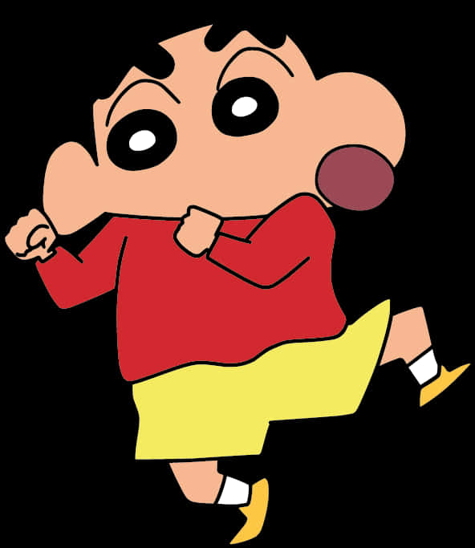

Shin-chan's Biography

Shin-chan,
whose full name is "Shinnosuke Nohara", is the main character of a very popular Japanese manga & anime series
'Crayon Shin-chan',
who is a mischievous, smart and 5-year-old kid and entertains people with
his funny antics,
songs and dances, who was born on May 5 andlives
in Kasukabe, Japan with his mother ( Misai), father (Hiroshi), and
younger sister (Himawari)
Shinchan is an extrovert, loves food, is a fan of Action Kamen, and often teases his mother, but sometimes he also appears to be very kind and mature.
Shin-chan's Hobby
1. Watching "Action Mask"and "Kantam Robo": Shin-chan loves watching his favorite superhero TV shows, "Action Mask" and "Kantam Robo".
2. "Ass Dance" & "Mr. Elephant" impersonations: He often does the "Ass Dance" and imitates "Mr. Elephant" to make people laugh.
3. Eating "Chocobi" biscuits: He really enjoys eating Chocobi brand chocolate biscuits.
4. Playing with his dog, Shiro: He plays with his pet dog Shiro, although sometimes he forgets to take care of him.
5. Playing sports: He is also a good baseball and soccer player.
6. Causing mischief: He loves to cause mischief at home, school, and in his neighborhood, which often annoys his parents.
7. Taking hot baths: He enjoys taking hot baths and saying "Paradise, Paradise" while relaxing.